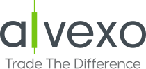

Meilleurs Brokers France 2022
Retrouvez les meilleurs brokers du marché et découvrez lequel saura vous correspondre au maximum.
.svg)

Les meilleurs brokers 2022 ont été déniché au travers de
nombreux avis détaillés et évalués via différents critères. Si
ces derniers sont considérés comme les leaders par nos experts,
seulement un pourra vous correspondre réellement.
Face à la forte concurrence, le choix peut rapidement devenir
difficile tant il y a de propositions. Entre les promesses
irréalistes, les frais de trading exorbitants ou bien les
plateformes de trading complexes, il est compliqué de déterminer
lequel des courtiers en ligne pourrait vous convenir.
Nous vous donnons donc la possibilité de tous les découvrir et
de savoir lequel pourra répondre à vos besoins selon vos
objectifs d’investissement, votre niveau de trading en ligne ou
encore votre zoné géographique.
Trading · Avis
Rejoignez l’une des plus grandes communautés.
Plus de 6 millions de positions ouvertes sur la plateforme Alvexo
68% des comptes CFD de détail perdent de l'argent.
Meilleurs brokers France 2022
-

Avatrade est un broker CFD présent sur le marché depuis 2006. Spécialisé dans le trading CFD et trading Forex, il a su gagner le cœur des traders et s’inscrit parmi les meilleurs en la matière
-

Alvexo s’impose comme le meilleur broker du trading en ligne depuis son lancement en 2014. Sa capacité à s’adapter à tous les profils lui permet aujourd’hui d’être un incontournable pour les traders débutants comme les traders professionnels
-
.svg)
Libertex est arrivé sur le marché en 1997 et compte aujourd’hui l’une des plus grandes communautés de clients. Son expérience considérable lui permet de proposer des plateformes de trading de qualité, adaptées à tous les niveaux
Choisissez un courtier correspondant à votre niveau
Type d’investissement
Niveau de trading
Pays
Avatrade est un broker CFD présent sur le marché depuis 2006. Spécialisé dans le trading CFD et trading Forex, il a su gagner le cœur des traders et s’inscrit parmi les meilleurs en la matière.
Avantages
Dépôt minimum de 100 €
Divers outils de trading disponibles
Large sélection d’actifs financiers
Inconvénients
Délai pour le retrait relativement long
Frais d’inactivité mensuels appliqués
Avatrade offre un large panel d’actifs financiers,
principalement sous forme de CFD. C’est aussi un broker Forex et
saura donc satisfaire tous les traders en quête d’investir sur
le marché des devises.
Il met à disposition plusieurs plateformes différentes dont
MetaTrader 4 et MetaTrader 5, ainsi qu’une multitude d’outils de
trading pour améliorer vos performances et vos connaissances.
Alvexo s’impose comme le meilleur broker du trading en ligne depuis son lancement en 2014. Sa capacité à s’adapter à tous les profils lui permet aujourd’hui d’être un incontournable pour les traders débutants comme les traders professionnels.
Avantages
Plateforme de trading hautement sécurisée
Académie de trading de très grande qualité
Application mobile bien optimisée
Inconvénients
La procédure de création de compte est relativement longue
Les spreads varient selon les opérations
Alvexo met à disposition plus de 450 actifs CFD à travers
différents marchés financiers dont les actions, le forex, les
crypto-monnaies,les indices boursiers et bien d’autres encore.
Il a l’avantage de s’adapter à tous les profils investisseurs et
propose une académie de trading à tous ses utilisateurs. Ainsi,
que vous soyez débutant ou bien plus expérimenté, Alvexo vous
donne toutes les clés pour exceller dans le trading en ligne.
Libertex est arrivé sur le marché en 1997 et compte aujourd’hui l’une des plus grandes communautés de clients. Son expérience considérable lui permet de proposer des plateformes de trading de qualité, adaptées à tous les niveaux.
Avantages
Spreads restreints sur la plateforme de trading
Broker régulé et fiable
Bonne sélection d’actifs CFD
Inconvénients
Le panel d’actifs financiers est limité avec peu
Des frais Libertex de retraits appliqués avec certaines méthodes
Des commissions sur des positions ouverte
Le broker Libertex propose plus de 250 actifs CFD sur les
actions, les matières premières, les indices boursiers, le Forex
etc.
Mais c’est sans doute la qualité de ses plateformes qui saura le
plus vous séduire. Il donne le choix de trader sur la plateforme
MetaTrader 4, MetaTrader 5 ainsi que sa propre plateforme. Une
version mobile est aussi disponible pour les traders nomades.